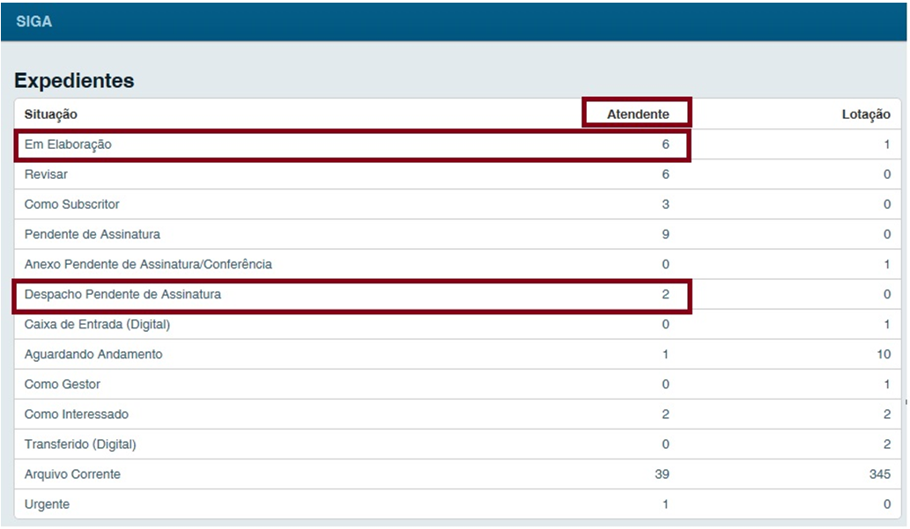

Página Inicial¶
Após efetuar o login no sistema a página inicial será apresentada, identificando no canto superior direito da tela o usuário e a lotação a qual o mesmo está lotado ou substituindo.


No Siga, um usuário pode atuar como substituto de outros usuários ou lotações.
Quadro de Expedientes e Quadro de Processos Administrativos¶
Na página inicial serão exibidos, por situação em que se encontram, todos os documentos relacionados ao Atendente e a Lotação na qual esteja logado naquele momento.

Atendente: Esta coluna apresenta todos os documentos diretamente relacionados à matrícula do usuário logado no SIGA. No exemplo acima, Imagem 10 existem 6(seis) expedientes que estão sendo elaborados sob uma matrícula (Em Elaboração) e 2 Despachos pendentes de assinatura(Transferido), entre outros.
Lotação: Esta coluna apresenta todos os documentos “na carga” da lotação em que o usuário está logado, (inclui os documentos relacionados à matrícula e disponibilizados também na coluna Atendente, já que o atendente é uma das matrículas integrantes da lotação). No exemplo acima, Imagem 11 existem 1(um) Processo físico para ser recebido pela lotação (A Receber (Físico)) e 3 Processos (Aguardando Andamento), entre outros.